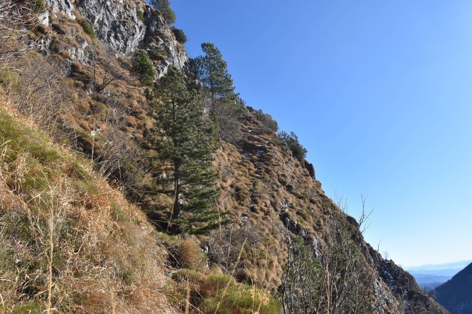

Salita da Sud al Deneâl: un sogno realizzato.
Salire da Sud sul Deneâl, ovvero dal lato che guarda Gemona, è una cosa a cui pensavo da anni: questa cima viene salita sempre dalla cresta Est oppure dalla Ovest, raramente da Nord (per il Cuel Frateit), ma mai nessuno (o quasi) ci sale da Sud, eppure è il versante più naturale.D'altronde i due Nâs si possono salire da Sud per il troi dai prâs d'Ambruseit, così come il Cjampón per il troi dal cjamòç, ma per il Deneâl non ho mai trovato alcuna informazione a riguardo.
Non è solo la morfologia del monte a suggerirne la salita da questo versante, ma pure l'enorme quantità di toponimi che qui vi si trovano, segno che un tempo questi luoghi - fin nei lembi di prato più impervi - erano frequentati per la fienagione e la caccia. Certo, toponimi, prati, stradis da ôge, tutto bello, ma... come ci si arriva in questi posti? Guardando la Tabacco non c'è neanche l'ombra di un sentiero! La mancanza di vie note per accedervi e alcuni toponimi misteriosi, come la cengle da Riche, mi hanno sempre incuriosito e in maggio 2024 finalmente le cose hanno iniziato a materializzarsi.
Due parole sul modus operandi: pensavo di inserire in questa pagina, come al mio solito, solo le foto della salita finale, poi ho aggiunto anche il tracciato, e mi son detto, perché non inserire anche alcune delle tante foto che ho scattato per studiare e progettare la via? Alla fine ho deciso di spezzare l'esposizione nelle quattro giornate che sono servite per realizzare la salita finale. D'altronde considerare solo la salita finale sarebbe riduttivo: la soddisfazione nasce proprio da tutto il processo; questo è un modo per dare un senso al «conta il viaggio e non la mèta», troppo spesso usato come semplice cliché.
Studio, pazienza e dedizione: solo da qui può nascere una passione travolgente e inesauribile per i monti: uno spiraglio contro il «mordi e fuggi» dei nostri tempi.
Considerazione finale: mi sento un grande egoista a pubblicare questa pagina. Se io avessi trovato tutte queste informazioni, non avrei mai maturato questo interesse, giacché la cusiosità nasce proprio dal mistero, che i monti sanno ben darci. Perché allora io devo privare te delle emozioni di cui ho pur potuto godere io? So bene che alla stragrande maggioranza degli escursionisti non può fregare di meno di «queste cose qui», e che ai pochi che invece queste cose interessano, i più saranno contenti a leggere pagine come questa in modo da avere una relazione da seguire e poter realizzare una salita senza tutto questo lavoro; una minuscola parte però potrebbe non apprezzare: non hai idea di quanto io ci sia rimasto male quando anni fa, dopo che stavo studiando gelosamente da mesi il troi dal cjamòç con il solo articolo del Cuardìn, sono entrato in libreria e ho trovato la relazione su Trois Neris! Ma non fraintendete, sarei ipocrita a dire che a me queste cose non toccano e ad auto-catalogarmi come baluardo dell'ultima categoria di escursionisti di cui parlavo: senza l'aiuto sopratutto psicologico dato dalla relazione più dettagliata di Armellini probabilmente sul troi dal cjamòç ci sarei andato ben più avanti.
Comunque, per chiudere il discorso, la mia giustificazione (parziale) è che questa è solo una piccolissima parte del puzzle, e il versante Sud del Deneâl riserva ancora moltissime possibilità di esplorazione: non penserai mica che i camosci salgano solo per questa via? E stiamo parlando solo di un singolo versante di una piccola montagna delle Prealpi: viva la mont e viva la libertà!
Grazie a Renato Candolini e alla sua magnus opus Un Monte è Storia: opera monumentale e importantissima per i monti del Gemonese.
25 maggio 2024: passeggiata sul Glemìne.
Avevo qualche ora di tempo alla mattina per cui eccomi sul Glemìne, armato di binocolo e macchina fotografica.
Osserviamo il versante che abbiamo davanti: molto evidenti i prati sotto al Nâs Piçul (prâs d'Ambruséit 1), con a dx, oltre il profondo solco del riul Fontanàt il costone Sud del Nâs Grânt (boschi Faugjelùt 2 e più in alto Faugjél 3); a dx di questo, diviso dal riul Fontànis un altro costone secondario caratterizzato da uno spigolo roccioso. La fascia di bosco 4 che sale fin sullo spigolo, compreso fra i rii Fontànis e Lacéit (oltre il costone secondario), è detto Boscùt di Fûr e proprio per lì sale l'itinerario qui descritto, per poi girare dietro e risalire per un pezzo l'Agadorie di Scafàcj, rio che poi confluisce nel riul dal Lacéit (di cui si vede appena lo sbocco nel Vegliato all'estrema dx della foto). A guardare da qui ci si rende conto che un modo per salire da Sud al Deneâl deve esserci, d'altronde è un versante tutto a boschi, prati, canali e costoni.
Per seguire i miei ragionamenti guarda e tieni presente il «rombo» di rocce sotto la cima del Deneâl, ovvero il slac dal taramòt.
Nota anche che il costone Sud del Nâs Grânt è ben distinto dal resto del monte (come ho evidenziato nella foto precedente): a prima vista infatti potrebbe sembrare che i prati sotto al Nâs Grânt siano un tutt'uno con i prati del Deneâl, eh no, magari!
Questa è la chiave: compresa fra i due «rombi» di rocce (quello superiore è il slac dal taramòt) c'è una ripida pala che scende diretta dalla cresta. È evidente una cengia alla base della pala: basterebbe sfruttare una rampa, forse quella che si vede a sx, per montare sulla cengia e poi è fatta!
Bisogna però cambiare angolazione per vedere bene l'accesso a quel bosco sotto la cengia (Boscùt di Dentri) e sperabilmente le rampe.
1 giugno 2024: passeggiata sul Cuarnàn.
Eccomi la settimana dopo sul Cuarnàn, inizialmente frustrato perché finisco in mezzo alla nebbia senza vedere nulla, ma dopo un po' le nuvole si diradano.
Il miglior punto di osservazione non è la cima ma bensì un pulpito nei pressi degli Ôrs di Cuarnàn: da qui si vede bene il costone Sud del Nâs Grânt con a dx l'Agadorie di Scafàcj (poi Riul dal Lacéit).
Da qui col binocolo ho potuto verificare che arrivare sotto alle rampe è facile se si risale il Boscùt di Fûr e l'Agadorie di Scafàcj.
Ricordi che dal Glemìne i prati sotto al Nâs Grânt sembrano un tutt'uno con i prati del Deneâl? Basta cambiare angolazione per scoprire che i due sono separati dall'orrida testata dell'Agadorie di Scafàcj! Le bestie passano, ma l'ambiente è davvero ripidissimo e repulsivo.
Ma andiamo al sodo: qui si vede bene la pala Sud, tutta facilmente percorribile, con alla base la cengia che da qui appare già più ostica.
La vedi quella traccia un po' in basso in centro foto? Non credevo ai miei occhi quando l'ho vista! Speravo quindi che una volta arrivati in loco si trovasse la traccia che facilmente portasse sulla cengia sfruttando quella rampa che sembra avere una traccia anch'essa. Purtroppo le cose non stanno così, provare per credere!
Scoprirò sul momento, durante la prima ricognizione assieme a Luciana, che l'unica rampa fattibile (secondo me, ma mi piacerebbe essere smentito) è quella più esterna che ho indicato con la freccia.
Ultima immagine: così appare la salita vista dalle baite della Val di Cuarnàn.
20 luglio 2024: primo tentativo, con Luciana.
Dopo ciò che avevo visto dal Glemìne e dal Cuarnàn, alla prima mattinata libera ho reclutato Luciana e, lasciata la macchina alla Petonade, abbiamo iniziato a salire il costone fra i rii Fontanis e Lacéit come preventivato; salito il costone fin sotto le rocce, abbiamo trovato un'ottima traccia di camosci che permette di traversare e scendere nell'Agadorie di Scafàcj, che è un rio che origina dall'imbuto appena sotto la cresta fra il Nâs Grânt e il Deneâl Piçul (l'Agadorie più in basso confluisce nel riul dal Lacéit).
La zona delle rampe: tutto spaventosamente ripido, dalle foto sembrava più appoggiato! I camosci vanno un po' dappertutto, ma per noi miseri umani la faccenda è piuttosto delicata.
L'unica rampa abbordabile è quella più esterna, che però in breve diventa molto esposta sul rio sottostante; da notare la traccia dei camosci sul terreno.
Salgo fino a metà, non so se continuare: ancora poco ed è fatta... ma mollo l'osso, troppo esposto e troppo ripido.
Approfittiamo per girare un po' attorno, sperando di trovare un passaggio migliore, ma niente da fare. Qui in foto, dopo essere saliti per una cinquantina di metri lungo un costoncino erboso che bipartisce l'Agadorie di Scafàcj, vediamo a dx la cengia su cui volevo salire; la volta successiva, messo piede sulla cengia, ho notato le orme sulla neve di un camoscio che ha raggiunto la cengia traversando dal punto in cui mi trovavo in questa foto: ti sembra facile? Provaci...
Il ramo dx dell'Agadorie di Scafàcj, che s'impenna sempre più fin sotto la cresta, in ambiente orrido e repulsivo: secondo me, per parafrasare Kugy riguardo alla Nord del Montasio, non passa di qui la via da Sud al Deneâl.
30 dicembre 2024: la salita completa, con Ivana.
Se c'era una cosa che volevo assolutamente fare prima che finisse l'anno, era proprio questa, per cui eccoci all'ultima escursione del 2024. Torno qui, seppure con un po' d'ansia.
Anche stavolta saliamo tutto il costone: dalla Petonade basta seguire i primi tornanti della strada e poi seguire il sentiero che sale sempre dritto, tenendo sempre il riul Lacéit sulla destra. Dopo gli 800 di quota la traccia si confonde con varie piste di animali, ma numerosi tornanti testimoniano che la traccia un tempo doveva essere un vero sentiero. Una volta la zona era ben meno boschiva (leggi qui).
Piccola divagazione: che sia questa la fantomatica Cengle da Riche?
Tornando a noi, alla fine del costone traversiamo verso Est - con un passo del gatto - ed entriamo nell'Agadorie di Scafàcj.
Agadorie di Scafàcj, che va risalito per un centinaio di metri; in centro foto, sopra i pini, s'intuisce la cengia-rampa su cui bisognerà montare.
Oltre questo canalino si gira a dx sui verdi e ci si alza ripidamente.
Si arriva alla ripida rampa da rimontare per mettere piede sulla cengia: è troppo lungo ed esposto come passaggio e senza corda io non ci andrei; è anche vero che noi avevamo l'incognita e quindi maggiore preoccupazione.
La foto è scattata dove ci sono due alberi su cui noi abbiamo allestito la prima sosta: avevamo 30m di corda e non bastavano, con 40m si è a posto. Comunque, ci sono molti alberetti: portare abbondanza di cordini e rinvii.
Alla fine della rampa il passaggio più ripido, un breve canalino sub-verticale, e si esce presso un pino solitario.
L'orrida testata dell'Agadorie di Scafàcj, col Nâs Grânt in alto; notare il costoncino erboso che citavo prima.
Ecco finalmente la cengia, con tanto di ottimo sentiero dei camosci!
Dalla foto non sembra ma l'esposizione è notevole.

L'imbocco della Pala Sud: si prende il primo canale che si intuisce bene a sx.
L'uscita della cengia.
Siamo fuori dai pericoli: un respiro di sollievo.
Ormai prossimi alla cima del Deneâl.
Finalmente in cima: e anche questa è fatta.
Mai visto il mare così nitido!
E neppure mai avevo visto i Colli Euganei...
Ad ogni modo questa via, assieme alla salita da Serai al Palòn dei Zábus e alla Sèmide dai Agnèi via Granvâlt-Cjalderàtis, è una delle mie più grandi soddisfazioni del 2024!
Grazie e complimenti a Luciana e ad Ivana.